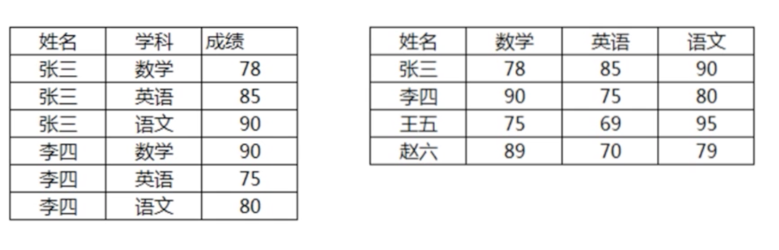

行和列互转的SQL技巧#
1. 行转列的场景#

1-1：使用自连接方式实现行转列#
user1 表结构：
mysql> select * from user1; +----+-----------+--------------+ | id | user_name | over | +----+-----------+--------------+ | 1 | 唐僧 | 功德佛 | | 2 | 孙悟空 | 净坛使者 | | 3 | 猪八戒 | 斗战圣佛 | | 4 | 沙僧 | 金身罗汉 | +----+-----------+--------------+ 4 rows in set (0.00 sec)
kills表结构：
mysql> select * from kills; +----+---------+-------+ | id | user_id | kills | +----+---------+-------+ | 1 | 2 | 12 | | 2 | 2 | 23 | | 3 | 1 | 9 | | 4 | 3 | 22 | | 5 | 2 | 44 | | 6 | 3 | 33 | | 7 | 1 | 11 | | 8 | 1 | 44 | | 9 | 1 | 55 | | 10 | 4 | 2 | +----+---------+-------+ 10 rows in set (0.00 sec)
将user1 和 kills进行内连接并分组
mysql> select a.user_name, sum(k.kills) from user1 a join kills k on a.id=k.user_id group by a.user_name; +-----------+--------------+ | user_name | sum(k.kills) | +-----------+--------------+ | 唐僧 | 119 | | 孙悟空 | 79 | | 沙僧 | 2 | | 猪八戒 | 55 | +-----------+--------------+ 4 rows in set (0.00 sec)
使用交叉连接实现行转列
select * from (select sum(k.kills) as '猪八戒' from user1 a inner join kills k on a.id=k.user_id and a.user_name='猪八戒') a cross join (select sum(k.kills) as '唐僧' from user1 a inner join kills k on a.id = k.user_id and a.user_name='唐僧') b cross join (select sum(k.kills) as '沙僧' from user1 a inner join kills k on a.id = k.user_id and a.user_name='沙僧') c cross join (select sum(k.kills) as '孙悟空' from user1 a inner join kills k on a.id = k.user_id and a.user_name='孙悟空') d; +-----------+--------+--------+-----------+ | 猪八戒 | 唐僧 | 沙僧 | 孙悟空 | +-----------+--------+--------+-----------+ | 55 | 119 | 2 | 79 | +-----------+--------+--------+-----------+ 1 row in set (0.00 sec)
1-2：使用case语句实现行转列#
select sum(case when user_name='孙悟空' then kills end) as '孙悟空', sum(case when user_name='孙悟空' then kills end) as '孙悟空', sum(case when user_name='孙悟空' then kills end) as '孙悟空', sum(case when user_name='孙悟空' then kills end) as '孙悟空' from user1 a join kills k on a.id=k.user_id; +-----------+-----------+-----------+-----------+ | 孙悟空 | 孙悟空 | 孙悟空 | 孙悟空 | +-----------+-----------+-----------+-----------+ | 79 | 79 | 79 | 79 | +-----------+-----------+-----------+-----------+ 1 row in set (0.00 sec)
2.单列转多行#
2-1：使用场景#
2-2：使用序列化表的方法实现列转行#

将user1中的数据的mobile列进行转行
- 第一步：创建一个序列化表：
mysql> create table tb_sequence(id int primary key auto_increment not null); Query OK, 0 rows affected (0.01 sec) mysql> insert into tb_sequence values(),(),(),(),(),(),(),(),(); Query OK, 9 rows affected (0.00 sec) Records: 9 Duplicates: 0 Warnings: 0 mysql> select * from tb_sequence; +----+ | id | +----+ | 1 | | 2 | | 3 | | 4 | | 5 | | 6 | | 7 | | 8 | | 9 | +----+
- 第二步：利用序列化表将列转为多行
select user_name, replace(substring(substring_index(mobile,',', a.id), char_length(substring_index(mobile, ',', a.id -1))+1), ',', '') as mobile from tb_sequence a cross join ( select user_name, concat(mobile, ',') as mobile, length(mobile) - length(replace(mobile, ',',''))+1 size from user1 b ) b on a.id <=b.size; +-----------+-------------+ | user_name | mobile | +-----------+-------------+ | 唐僧 | 12345678901 | | 唐僧 | 12344444444 | | 唐僧 | 12355555555 | | 孙悟空 | 12345678901 | | 孙悟空 | 12344444444 | | 孙悟空 | | | 猪八戒 | 12345678901 | | 猪八戒 | | | 沙僧 | 12345678901 | | 沙僧 | 12344444444 | | 沙僧 | 12355555555 | +-----------+-------------+ 11 rows in set (0.00 sec)
3. 多列转多行#
3-1：场景#
3-2：使用union all 多列转多行的实例#
select user_name, 'arms' as equipment, arms from user1 a join equipment b on a.id = b.user_id union all select user_name, 'clothing' as equipment, arms from user1 a join equipment b on a.id = b.user_id union all select user_name, 'shoe' as equipment, arms from user1 a join equipment b on a.id = b.user_id order by user_name; +-----------+-----------+--------------+ | user_name | equipment | arms | +-----------+-----------+--------------+ | 唐僧 | shoe | 九环锡杖 | | 唐僧 | clothing | 九环锡杖 | | 唐僧 | arms | 九环锡杖 | | 孙悟空 | clothing | 九池钉靶 | | 孙悟空 | arms | 九池钉靶 | | 孙悟空 | shoe | 九池钉靶 | | 沙僧 | shoe | 降妖报账 | | 沙僧 | clothing | 降妖报账 | | 沙僧 | arms | 降妖报账 | | 猪八戒 | shoe | 紧箍咒 | | 猪八戒 | clothing | 紧箍咒 | | 猪八戒 | arms | 紧箍咒 | +-----------+-----------+--------------+ 12 rows in set (0.00 sec)